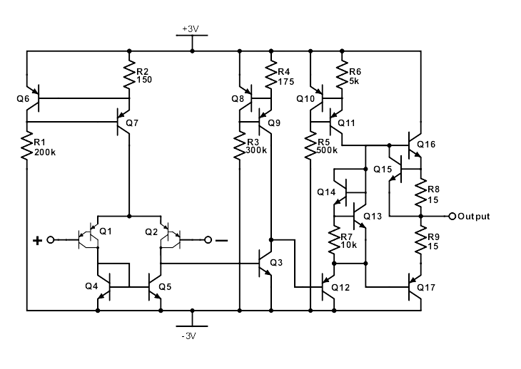
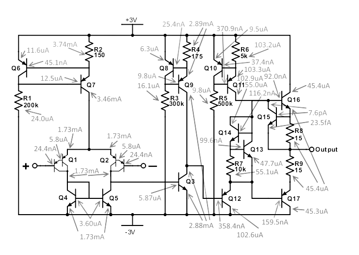

Schematic

Throughout this amplifier, we alternate PNP and NPN stages to maintain headroom without using an explicit, ”battery-based” level shifter, i.e, a resistor in series with a current source in the signal path, which would decrease common-mode range.
The input stage of this op-amp is a PNP differential pair (Q1, Q2) with Darlington inputs and current mirror
load (Q4, Q5, R1, R2). The tail current is set by the base-emitter referenced current source comprising Q6, Q7,
R1, and R2. Because the output current is set by the voltage drop over R2, which is set by Q6 to be Veb,6, the
current is determined overwhelmingly by
The PNP Darlington inputs decrease the input current draw by a factor of
The basic NPN current mirror load on the input stage mirrors the current from the noninverting input to the output of the first stage, performing differential to single-ended conversion without sacrificing half the differential gain.
The first stage is built with PNP active transistors due to the common-mode range of -2V to 1V. The current source for this stage was placed at the top rail to take advantage of the 2V headroom (from 3V to 1V), leading to the choice of PNP for the gain elements and NPN for the current mirror load.
The gain stage of this amplifier is a basic NPN common-emitter (Q3) with an active base-emitter referenced current source (Q8, Q9, R4, R3) load, which, as discussed previously, has a high output impedance and therefore allows the gain of this stage to be high The common-emitter stage provides high gain:
with
The output stage is a Class AB output stage with partial output short protection provided by Q15: when
the current through R15 is sufficient to cause a Vbe voltage drop across R8, Q15 turns on, robbing Q16 of its
base current and thereby limiting total output current to
Q13, Q14, and R7 work to maintain a voltage drop of
Specifications
Current Consumption
| \(A_v\) | 110.3 dB = 327.3 V/mV |
| \( \omega_u \) | 113 MHz |
| Max. Current Consumption | 6.55 mA at -2.6V CM |
| Max. Input Bias Current (Per Input) | 25.7 nA at -2.6V CM |
| Input CM Range | -2.6V to 1.2V |
| Output Short Protection (Positive Swings) | 34.1 mA with grounded output |
| Offset Voltage | -236 µV |
| Gain Required for Stability (45◦ phase margin) | Decrease of 40 dB |
| Input Impedance | 23.4 MΩ at DC |
| Output Impedance | 36.2 Ω at DC |
| Slew Rate | 354.0 V/μs |